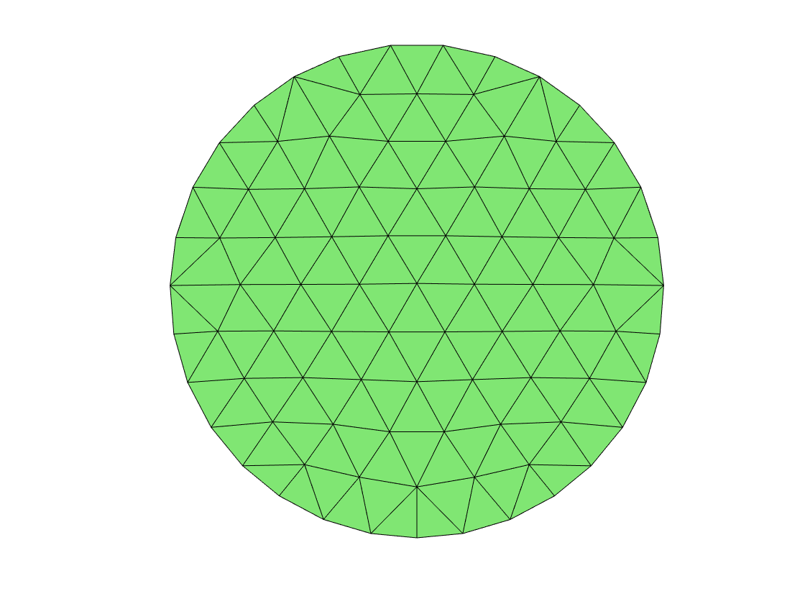
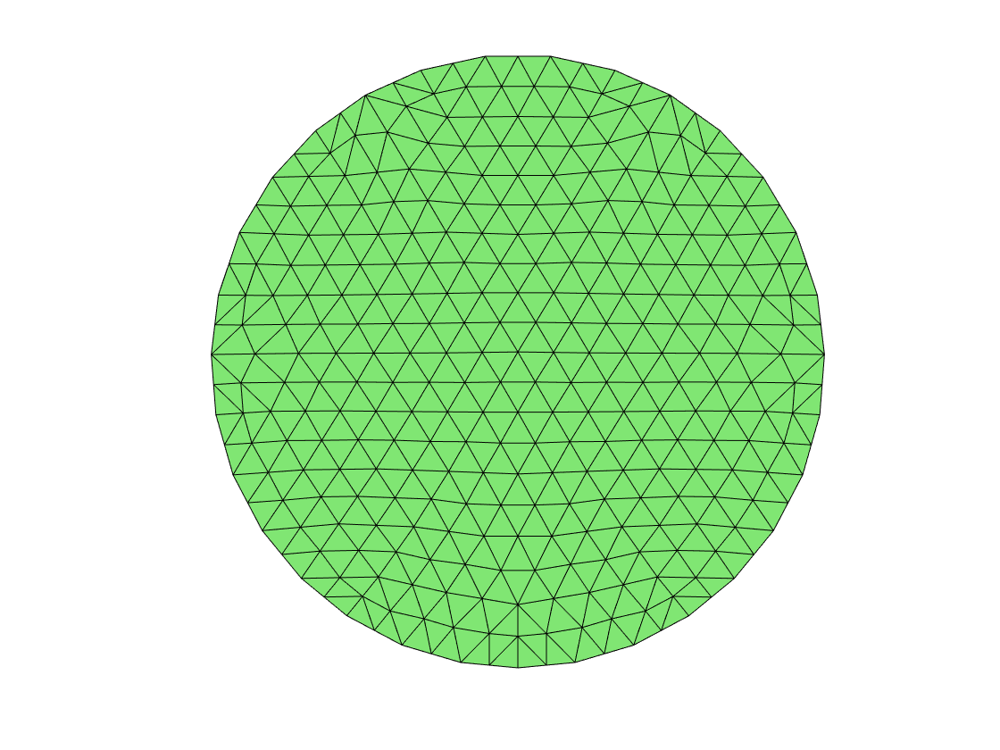
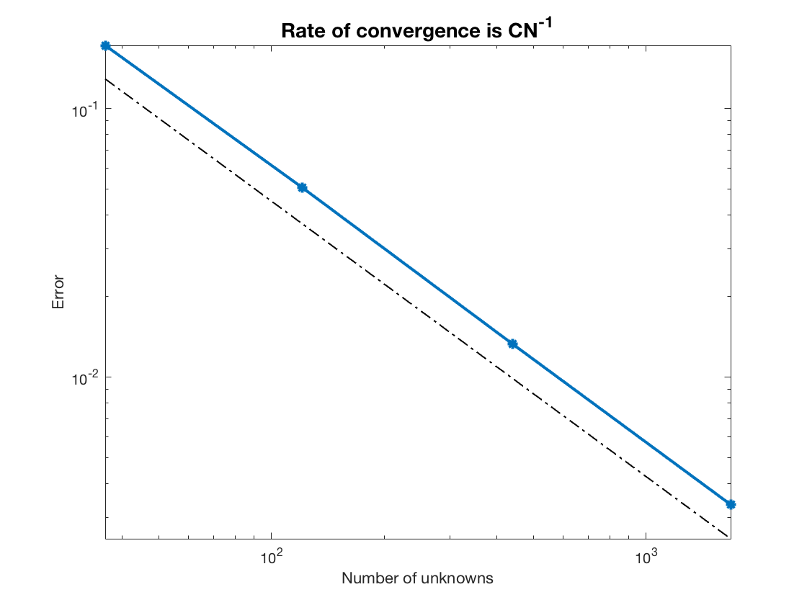
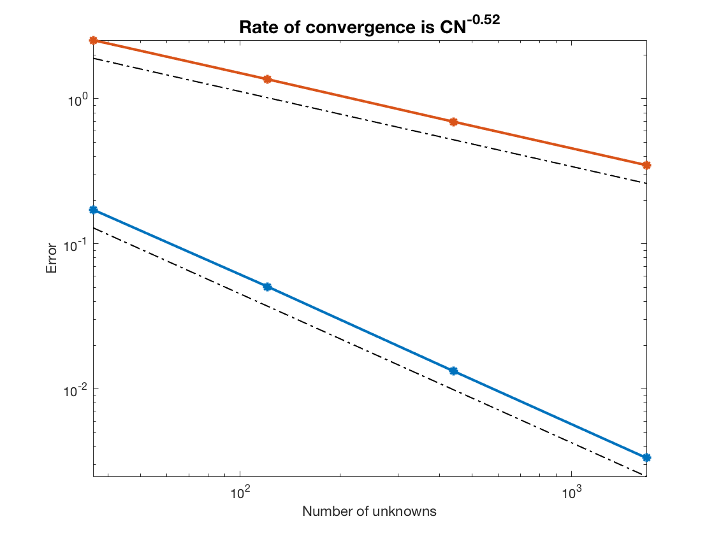
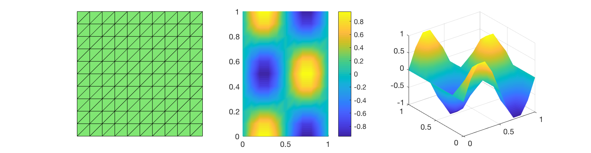
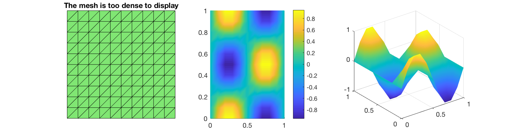
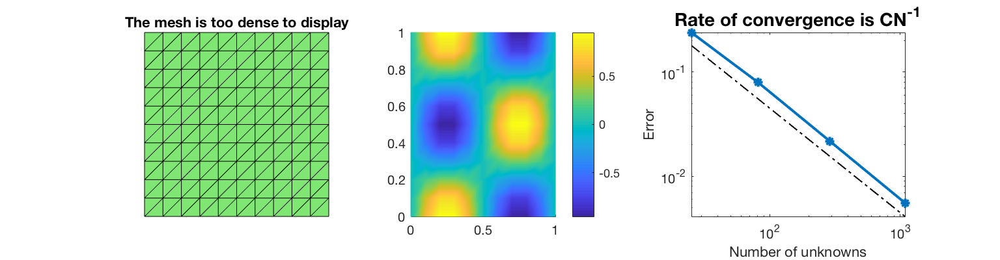
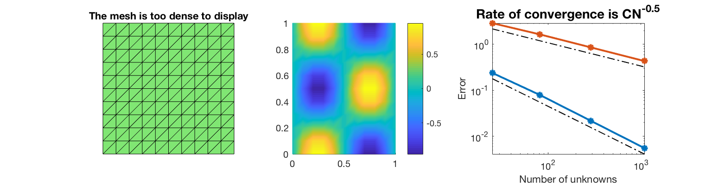

Project 2: Linear Finite Element Methods (Frank Lin, SID=69645187)
The purpose of this project is to write a finite element code for solving the Poisson equation in a general polygonal domain using piecewise linear finite elements. All the functions/scripts are in the file 226Project2.
Contents
Step 1: Download and Install iFEM
- Download iFEM
- Unzip the file to where you like
- In MATLAB, go to the iFEM folder
- Run setpath.m
Step 2: Mesh
- Generate mesh for square and disk domains
[node,elem] = squaremesh([0,1,0,1],0.25); showmesh(node,elem);

[node,elem] = circlemesh(0,0,1,0.2); showmesh(node,elem);
- Min quality 0.7571 - Mean quality 0.9696 - Uniformity 4.34%
- Uniform refine to get a finer mesh
[node,elem] = uniformrefine(node,elem); showmesh(node,elem);
Step 3: Assembling
Compare three ways of assembling stiffness matrix discussed in Programming of FEM.
[node,elem] = circlemesh(0,0,1,0.2); for Refine=0:1 profile on fprintf('number of refine=%i\n', Refine); fprintf('assemblingstandard\n'); tic; assemblingstandard(node,elem); toc; %Slowest fprintf('assemblingsparse\n'); tic; assemblingsparse(node,elem); toc; fprintf('assembling\n'); tic; assembling(node,elem); toc; %Fastest fprintf('\n'); profile viewer [node,elem] = uniformrefine(node,elem); end
- Min quality 0.7570 - Mean quality 0.9696 - Uniformity 4.34% number of refine=0 assemblingstandard Elapsed time is 0.031817 seconds. assemblingsparse Elapsed time is 0.018783 seconds. assembling Elapsed time is 0.007865 seconds. number of refine=1 assemblingstandard Elapsed time is 0.167445 seconds. assemblingsparse Elapsed time is 0.122088 seconds. assembling Elapsed time is 0.012050 seconds.
Compare the computational time for different N (by uniform refinement of the initial mesh).
Step 4: Right hand side
Using three points quadrature (i.e. 3 middle points of a triangle) to compute the right hand side vector. Please see the function RightHandSide.m
Step 5: Boundary conditions
- Use findboundary.m to get all boundary nodes and edges
- Code pure Dirichlet boundary condition (See Below and Dirichlet_bd.m)
- Code pure Neumann boundary condition (See Below)
Dirichlet boundary condition
A=assembling(node,elem); N = size(node,1); b=RightHandSide(node,elem); [bdNode,bdEdge,isBdNode,isBdElem] = findboundary(elem); u = zeros(N,1); u(bdNode) = g_d_function(node(bdNode,:)); b = b-A*u;
Neumann boundary condition
Nve = node(bdEdge(:,1),:) - node(bdEdge(:,2),:); edgeLength = sqrt(sum(Nve.^2,2)); mid = (node(bdEdge(:,1),:) + node(bdEdge(:,2),:))/2; b = b + accumarray([bdEdge(:),ones(2*size(bdEdge,1),1)],repmat(edgeLength.*g_N(mid)/2,2,1),[N,1]);
Step 6: Convergence
clear % % * Choose a smooth solution, say $u = \sin(2\pi x)\cos(2\pi y)$, calculate the % right hand side f and boundary conditions for the unit square. [node,elem] = squaremesh([0,1,0,1],0.2); % * Use your subroutine to get an approximation and use |showresult| to plot % the mesh and the solution. for k=1:4 exactu = inline('sin(2*pi*pxy(:,1)).*cos(2*pi*pxy(:,2))','pxy'); Du = inline('[2*pi*cos(2*pi*pxy(:,1)).*cos(2*pi*pxy(:,2)) -2*pi*sin(2*pi*pxy(:,1)).*sin(2*pi*pxy(:,2))]','pxy'); %uI = exactu(node); N(k) = size(node,1); b=RightHandSide(node,elem); A=assembling(node,elem); [bdNode,bdEdge,isBdNode,isBdElem] = findboundary(elem); u_h=Dirichlet_bd(node,elem); %u_I = u_exact(node); %errL2 = getL2error(node,elem,u_exact,u_numerical); error_L2(k) = getL2error(node,elem,exactu,u_h); error_H1(k) = getH1error(node,elem,Du,u_h); [node,elem] = uniformrefine(node,elem); end showrate(N,error_L2);
showrate(N,error_H1);
[node,elem] = squaremesh([0,1,0,1],0.1);
u_h=Dirichlet_bd(node,elem);
showresult(node,elem,u_h); %Show numerical result
[node,elem] = squaremesh([0,1,0,1],0.1);
u_h=u_function(node);
showresult(node,elem,u_h); %Show exact(interpolation) result
 Step6 and a half: Neumann Boundary on Square
clear; exactu = inline('cos(2*pi*pxy(:,1)).*cos(2*pi*pxy(:,2))','pxy'); Du = inline('[-2*pi*sin(2*pi*pxy(:,1)).*cos(2*pi*pxy(:,2)) -2*pi*cos(2*pi*pxy(:,1)).*sin(2*pi*pxy(:,2))]','pxy'); [node,elem] = squaremesh([0,1,0,1],0.25); for k=1:4 A= assembling(node,elem); N(k) = size(node,1); mid1 = (node(elem(:,2),:)+node(elem(:,3),:))/2; mid2 = (node(elem(:,3),:)+node(elem(:,1),:))/2; mid3 = (node(elem(:,1),:)+node(elem(:,2),:))/2; e1 = (node(elem(:,2),:)-node(elem(:,1),:)); e1 = [e1 zeros(size(e1,1),1)]; e2 = (node(elem(:,3),:)-node(elem(:,1),:)); e2 = [e2 zeros(size(e2,1),1)]; area = abs((cross(e1,e2)))*1/2; area=area(:,3); bt1 = area.*(rhsfunction2sq(mid2)+rhsfunction2sq(mid3))/6; bt2 = area.*(rhsfunction2sq(mid3)+rhsfunction2sq(mid1))/6; bt3 = area.*(rhsfunction2sq(mid1)+rhsfunction2sq(mid2))/6; b = accumarray(elem(:),[bt1;bt2;bt3],[N(k) 1]); [bdNode,bdEdge,isBdNode,isBdElem] = findboundary(elem); Nve = node(bdEdge(:,1),:) - node(bdEdge(:,2),:); edgeLength = sqrt(sum(Nve.^2,2)); mid = (node(bdEdge(:,1),:) + node(bdEdge(:,2),:))/2; b = b + accumarray([bdEdge(:),ones(2*size(bdEdge,1),1)],repmat(edgeLength.*g_Nsquare(mid)/2,2,1),[N(k),1]); b = b - mean(b); u_h=A\b; u_h=u_h-mean(u_h); error_L2(k) = getL2error(node,elem,exactu,u_h); error_H1(k) = getH1error(node,elem,Du,u_h); [node,elem] = uniformrefine(node,elem); end showresult(node,elem,u_h-mean(u_h));
Warning: Matrix is close to singular or badly scaled. Results may be inaccurate. RCOND = 9.350037e-20.
showrate(N,error_L2);
showrate(N,error_H1);
Step7: Neumann Boundary (See more detail in the scripts Step7.m)
clear; %Publish/Run the script Step7.m, the constants are adjusted such that the %exact solution is f(x,y)=x^2+y^2-1/2.